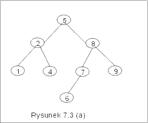
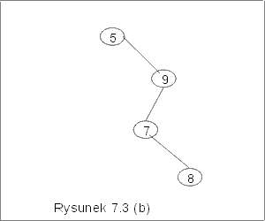

| « poprzedni punkt | nastêpny punkt » |
Niech v bêdzie wierzcho³kiem drzewa binarnego i niech LD(v) oznacza jego lewe poddrzewo (tzn. drzewo, którego korzeniem jest lewy syn wierzcho³ka v), a PD(v) - jego prawe poddrzewo.
Definicja 2.1 Niech <Et, £> bêdzie niepustym zbiorem etykiet, liniowo uporz±dkowanym przez relacjê £. Drzewem binarnych poszukiwañ nazywamy etykietowane drzewo binarne z wyró¿nionym korzeniem D = <V, E, et > takie, ¿e et jest funkcj± ró¿nowarto¶ciow± przyporz±dkowuj±c± wierzcho³kom drzewa etykiety w taki sposób, ¿e dla dowolnego v ÎV,
(1) je¶li x ÎLD(v), to et(x) £ et(v),
(2) je¶li x ÎPD(v), to et(v) £ et(x).
Przyk³ad 2.1
Drzewo binarne przedstawione na rysunku 7.1(a) jest etykietowanym drzewem binarnym, ale nie jest drzewem binarnych poszukiwañ, poniewa¿ porz±dek etykiet nie zosta³ zachowany. Drzewa na rysunku 7.3(a) i 7.3(b) s± drzewami binarnych poszukiwañ. Dla ka¿dego wierzcho³ka, etykiety wierzcho³ków nale¿±cych do lewego poddrzewa s± mniejsze, a etykiety wierzcho³ków nale¿±cych do prawego poddrzewa s± wiêksze od etykiety tego wierzcho³ka.
|  |  |
Uwaga. Zauwa¿my, ¿e warunki (1), (2) definicji 2.1 nie mog± byæ
zast±pione warunkiem
(*) dla dowolnego wierzcho³ka v, etykieta lewego syna jest mniejsza, a etykieta prawego syna jest wiêksza ni¿ etykieta wierzcho³ka v.
Zamieniaj±c w drzewie 7.3(b) etykiety 8 i 9 miejscami, otrzymamy drzewo, dla którego warunek (*) jest spe³niony, a które mimo to nie jest drzewem binarnych poszukiwañ, bo nie spe³nia warunków (1) i (2) definicji 2.1.
Drzewa BST, bêdziemy implementowali tak jak inne drzewa binarne, jako obiekty klasy node (por. wyk³ad VI p4.). Dostêp do innych wierzcho³ków bêdzie umo¿liwiony zawsze przez korzeñ drzewa i jego atrybuty left i right. Warto¶ci funkcji etykietuj±cej bêd± zapamiêtane jako parametr val, tzn. je¶li et(v) = e, to v.val = e.
W dalszych punktach tego wyk³adu omówimy podstawowe operacje na drzewach BST, których wykonanie prowadzi znów do drzew BST. Teraz zauwa¿my tylko, ¿e, je¶li zbiór X jest reprezentowany przez drzewo BST, to wyszukanie w tym zbiorze elementu najmniejszego lub najwiêkszego jest niezwykle proste. Aby ustaliæ warto¶æ elementu najmniejszego musimy "przej¶æ" po lewej skrajnej ga³êzi tego drzewa. Element na koñcu tej ¶cie¿ki jest elementem najmniejszym. Element na koñcu skrajnej, prawej ¶cie¿ki jest elementem najwiêkszym w X. Algorytmy znajdowania minimum i maksimum s± zamieszczone poni¿ej.
| minBST(d : node) { | | | maxBST(d : node) { | |
| v := d; | | | v := d; | |
| while (v.left ¹ null) do | | | while (v.right ¹ null) do | |
| v := v.left; | | | v := v.right | |
| od; | | | od; | |
| return v.val | | | return v.val | |
| } | | | ||
Koszt wyszukiwania minimum i maksimum jest proporcjonalny do d³ugo¶ci przegl±danej ¶cie¿ki. Zatem dla drzewa o wysoko¶ci h wynosi O(h). Nie musimy wykonywaæ operacji porównywania elementów, a tylko instrukcje przypisania. Dla drzewa o n wierzcho³kach, w najgorszym razie wykonamy ich n, a w najlepszym tylko jedn±. Interesuj±cy jest te¿ koszt ¶redni, który wynosi O(lg n), ale o tym bêdzie mowa w dalszej czê¶ci wyk³adu.
Pytanie 4:
Jaka jest minimalna i maksymalna liczba etykiet, które mog± byæ
przechowywane w drzewie BST o wysoko¶ci h?
| « poprzedni punkt | nastêpny punkt » |